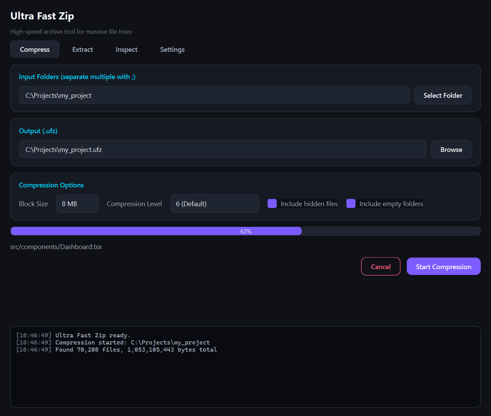
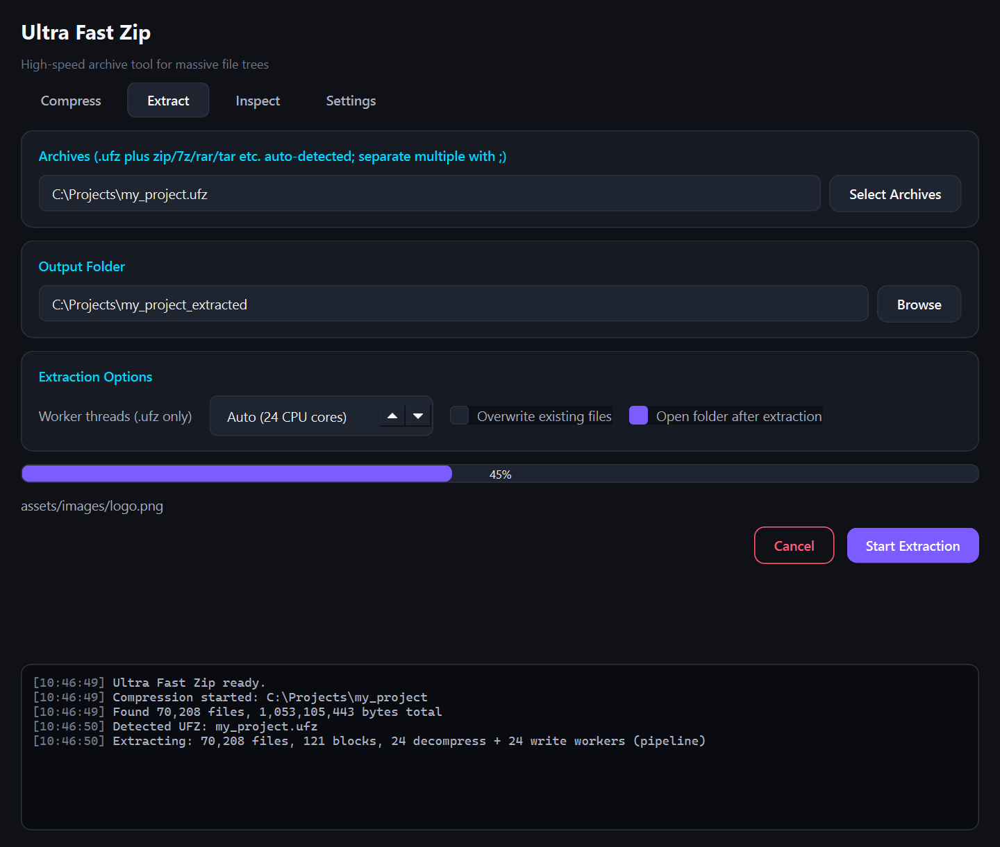
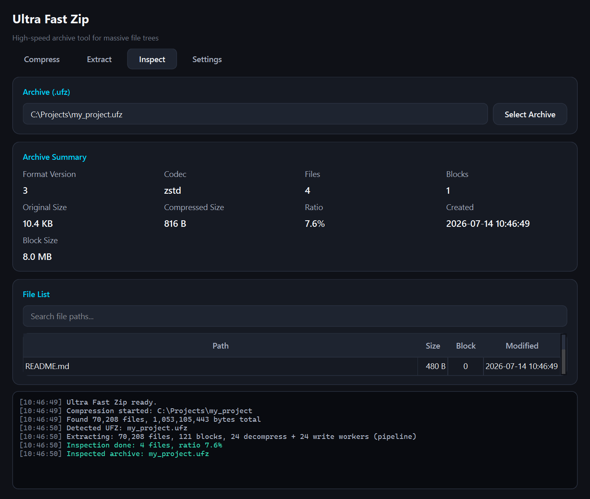
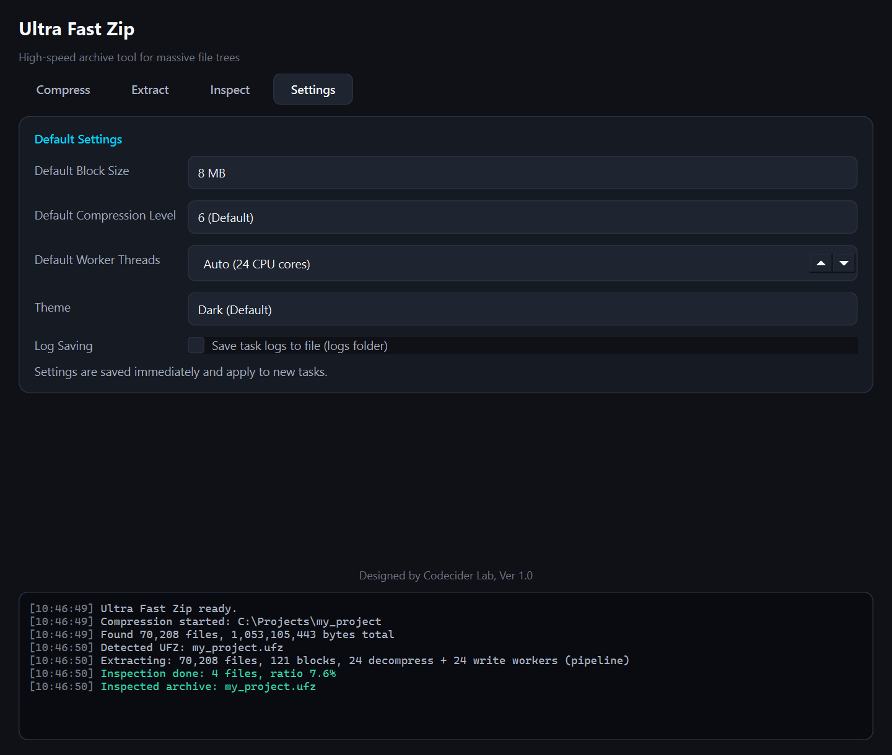

User Manual · v1.0 · High-speed archive tool for massive file trees
Ultra Fast Zip packs and unpacks folders containing very large numbers of small
files — source trees, asset folders, datasets — much faster than ZIP. It uses
its own .ufz format: files are grouped into blocks and compressed
with Zstandard, verified by xxHash64
checksums, and extracted through a parallel pipeline that uses every CPU core.
It also opens most common archive types: drop a zip,
7z, rar, tar(.gz/.bz2/.xz/.zst),
gz, cab, or iso file on the Extract tab
and the format is detected automatically from its content.
docs/format_comparison.md for methodology and full results.
UltraFastZip\UltraFastZip.exe for the GUI.
Keep the folder intact — the exe does not run if copied out alone.ufz.exe is the standalone CLI; copy it anywhere,
or add it to PATH.Requirements: Windows 10/11 64-bit. No installer or runtime needed.
python -m venv .venv
# Windows: .venv\Scripts\activate macOS/Linux: source .venv/bin/activate
pip install -r requirements.txt
python app/main.py # GUI
python app/cli.py --help # CLIRequires Python 3.11+. On Windows, setup.bat does the above in one step.

Compressing a folder to .ufz, 62% complete.
;. Each folder becomes its own archive.<folder>.ufz next to the source). With multiple
inputs, this field holds the output folder instead.| Option | Effect |
|---|---|
| Block Size (1–32 MB) | Larger blocks compress slightly better; smaller blocks parallelize extraction more finely. The 8 MB default suits most data. |
| Compression Level | 1 = fastest, 6 = balanced default, 9+ = smaller but slower. |
| Include hidden files / empty folders | Uncheck to skip them. |

Extracting an archive with automatic format detection.
<name>_extracted. With multiple archives, each gets
its own subfolder here.| Option | Effect |
|---|---|
| Worker Threads (.ufz only) | 0 = one per CPU core. The pipeline runs this many decompress and write workers. |
| Overwrite existing files | Off by default — extraction stops with an error rather than replacing files. |
| Open folder when done | Opens the output in Explorer. |
../ tricks (Zip Slip) are rejected before anything is written.

Archive summary and searchable file list — read instantly from the header.
Select a .ufz file to see its format version, codec, file/block
counts, original and compressed sizes, ratio, and creation time, plus the full
file list with a search filter. Because UFZ stores its metadata at the front of
the archive, inspection is instant even for very large archives — nothing is
decompressed.

Defaults applied to new jobs.
Set the default block size, compression level, and thread count, and optionally
enable saving the log console to files (logs/ufz_*.log). All
options — including those on the Compress/Extract tabs — are saved as you
change them and restored on the next launch.
ufz.exe (or python app/cli.py) offers the same
engine without the GUI:
# Pack a folder (default output: <folder>.ufz)
ufz pack my_folder
ufz pack my_folder -o backup.ufz --block-size 16 --level 9 --overwrite
# Extract any supported archive (format auto-detected)
ufz unpack backup.ufz
ufz unpack backup.ufz -o restore_dir --threads 8 --overwrite
ufz unpack photos.zip
# Show archive info / file list
ufz inspect backup.ufz
ufz inspect backup.ufz --list| Command | Option | Description |
|---|---|---|
| pack | --block-size MB | 1/4/8/16/32, default 8 |
--level 1-22 | Zstandard level, default 6 | |
--no-hidden / --no-empty-dirs | exclude hidden files / empty folders | |
--overwrite | replace an existing output file | |
| unpack | -t, --threads N | worker threads (.ufz only), 0 = CPU count |
--overwrite | replace existing files | |
| inspect | -l, --list | print the file list |
| all | -q, --quiet | suppress progress and logs |
Exit codes: 0 success · 1 error · 130 cancelled (Ctrl+C).
| Format | Pack | Extract | Backend |
|---|---|---|---|
.ufz (and legacy .fpk) | ✔ | ✔ (parallel) | native pipeline |
| zip | — | ✔ | built-in (cp949 filename recovery) |
| tar, tar.gz, tar.bz2, tar.xz, tar.zst | — | ✔ | built-in, streaming |
| gz, bz2, xz, zst (single file) | — | ✔ | built-in (foo.txt.gz → foo.txt) |
| 7z | — | ✔ | py7zr if installed, else bsdtar |
| rar, cab, iso | — | ✔ | bsdtar (bundled with Windows 10+/macOS) |
Detection uses magic bytes, so files with wrong or missing extensions still extract correctly. Formats delegated to bsdtar show no percentage progress.
Header
MAGIC 8 bytes UFZ1\0\0\0\1 (legacy FPK1\0\0\0\1 readable)
VERSION uint16 little-endian
METADATA_LENGTH uint64
Metadata JSON (UTF-8) — file table, block map, sizes, mtimes
Block Header #1 RAW_SIZE u64 | COMPRESSED_SIZE u64 | XXH64 u64
Compressed Block #1 (zstd)
Block Header #2 ...| Symptom | Cause / fix |
|---|---|
| "File already exists (overwrite disabled)" | The output already contains that file. Enable
Overwrite existing files (GUI) or pass
--overwrite (CLI). |
| "Block checksum mismatch" | The archive is damaged (truncated download, disk error). Re-obtain the archive; extraction never writes unverified data. |
| "Unsupported or unrecognized archive format" | The file is not an archive Ultra Fast Zip can read — or is encrypted. Encrypted zip/7z/rar archives are not supported. |
| "Extracting RAR requires bsdtar" | rar/cab/iso (and 7z without py7zr) use the system's
tar.exe. It ships with Windows 10+ and macOS; on Linux,
install libarchive-tools (bsdtar). |
| First run on a folder is slow, later runs fast | Cold-cache small-file reads are limited by the disk and antivirus, not the tool. Subsequent (warm-cache) runs show the true speed. |
| UltraFastZip.exe does nothing when double-clicked | It was copied out of its folder. Copy the whole
UltraFastZip folder; only ufz.exe is
standalone. |
Can it create zip/7z archives? No — packing is
.ufz only. Extraction covers the common formats.
Does it encrypt archives? Not yet; use OS or container encryption for sensitive data.
Are my old .fpk archives still usable? Yes. UFZ is the same format renamed; every legacy version (v1–v3, FPK magic) extracts as-is.
Why is packing single-threaded? A parallel pack pipeline is on the roadmap; extraction already scales with cores, which is where the format design pays off most.